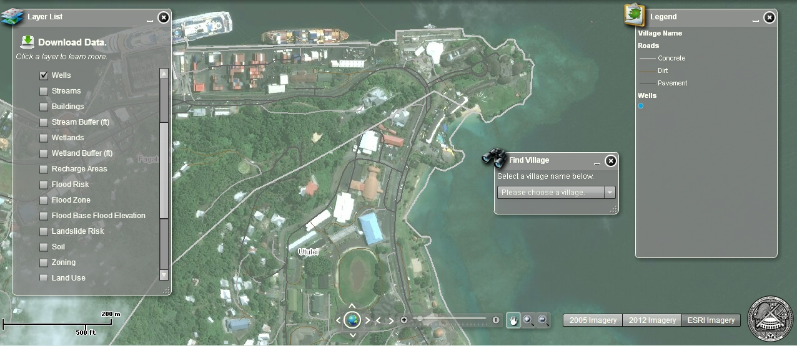

American Samoa GIS Page
Talofa and welcome to the American Samoa Land GIS WebSite. This is a compilation of data and websites related to land use from the Department of Commerce (DOC)

Land Use Portal
The development of the Land Use Permitting Portal was completed by the American Samoa Department of Commerce in partnership with the National Oceanic and Atmospheric Administration (NOAA) Pacific Services Center.

LIDAR and Aerial Imagery Portal
Showcasing multiple years of satalite and aerial Imagery of the Islands